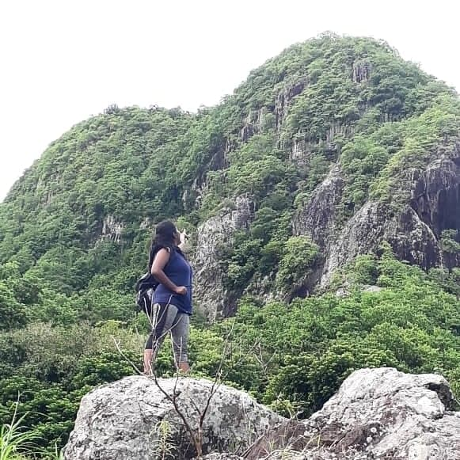
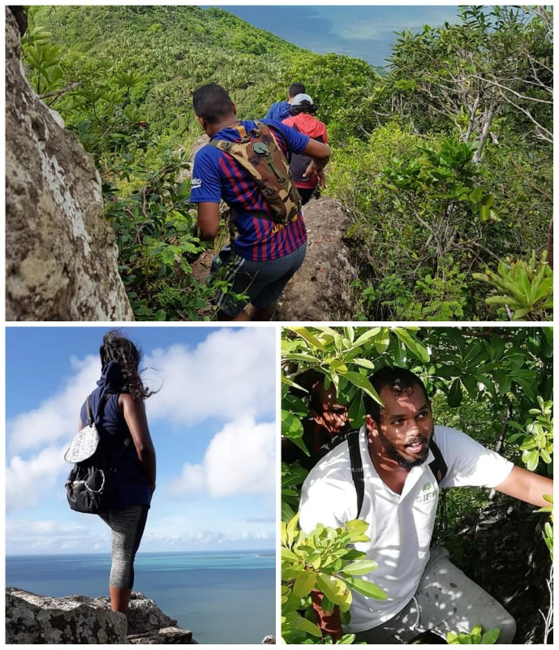
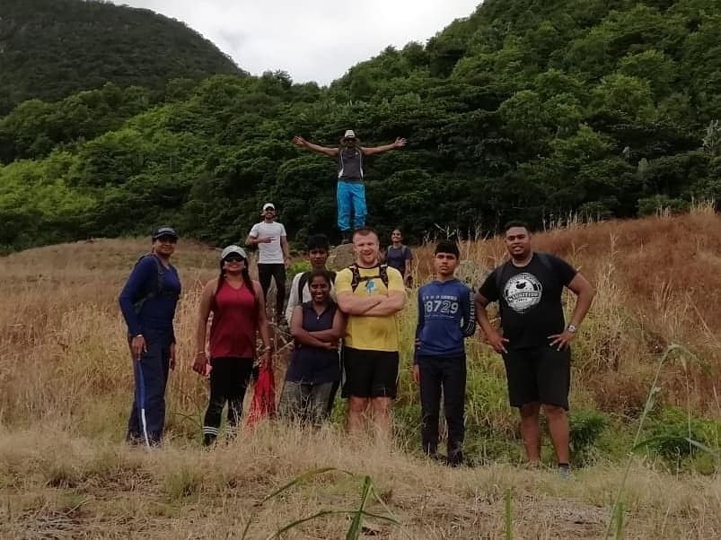
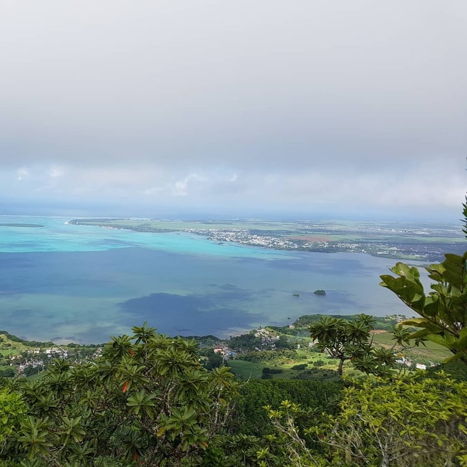

Situated in the South East of the Island, the mountain is found in the village called Virieux Grand Port. It got its name after its shape of a dormant lion with its head facing the village Ferney and tail the islets like Ile au Phare.
It is not enough to stare up the step – we must step up the stairs” – Vance Havner

The walk begins amongst the sugarcane fields until you reach the stairs where the actual hiking commence. It offers plenty of greenery and magnificent view on the ocean throughout the hike. The climb is rather an easy but annoying one. No clear demarcation, the path was rather slippery. Reaching an ascendance, there are no trees but just roots to grip on. You’ll definitely have a messy muddy climb until you reach the summit of the lion mountain you either turn right to the viewpoint of the tail or turn left to that of the head.

A drawback of the climb is the mosquitoes. Oh God the mosquitoes are constant and persistent. Nothing that we did could drive them away. Even the cream didn’t work so we derived new ways of getting rid of them.

Like Roy T. Bennett once said;
Your hardest times often lead to the greatest moments of your life. Keep going strong. Though situations build strong people in the end.
Because the view at the summit was totally worth the effort.
